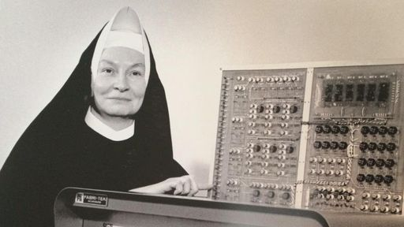
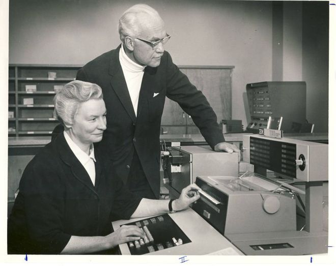

Nas comemorações do Dia Internacional da Mulher, que acontece anualmente em 8 de março, listamos dez das mulheres mais importantes da história da tecnologia. Fazem parte dessa relação nomes como Ada Lovelace, que marcou a estreia da série “Mulheres Históricas”, Grace Hopper, a “vovó do COBOL”, e a lista também fala da Irmã Mary Kenneth Keller, que é a estrela da biografia desta semana.
Sim, Mary Kenneth Keller foi uma freira nascida nos Estados Unidos em 1913 que dedicou sua vida às ciências da computação, sendo a primeira mulher da história a receber um doutorado nessa área. Até falecer aos 71 anos em 1985, Keller atuava como cientista da computação e também como militante pela inclusão de mulheres no mundo da informática, ajudando a fundar uma associação infantil para o uso de computadores na educação.
Keller entrou para a ordem das Irmãs de Caridade da Abençoada Virgem Maria em 1932, tendo feito seus votos na congregação em 1940. Na sequência, a Irmã conquistou o bacharelado em Ciências com ênfase em Matemática em 1943, e depois conseguindo seu mestrado em Matemática e Física em 1953 pela Universidade DePaul – uma instituição católica. O famoso doutorado em Ciências da Computação veio em 1965 na Universidade de Wisconsin-Madison graças à sua tese cujo o título era a “Inferência indutiva dos modelos gerados pelo computador”. Com isso, Mary garantiu sua presença nas páginas da história conquistando o título de primeira mulher a se tornar doutora em ciências da computação.
Em 1958 Mary passou a trabalhar em uma oficina de ciência da computação na Fundação Nacional de Ciência, nos EUA, que ficava na Darthmouth College – onde participou do desenvolvimento da linguagem de programação BASIC (Beginner’s All-purpose Symbolic Instruction Code, ou “Código de Instruções Simbólicas de Uso Geral para Principiantes”, em português). Essa linguagem foi utilizada por décadas com fins didáticos, até ser substituída pelo Pascal, por ser mais arrojado e seguro.
Envolvida com didática, educação e ensino, Mary enxergou potencial nos computadores para se tornarem uma ferramenta educacional e em prol do desenvolvimento humano, promovendo o ensino de qualidade e aumentando o acesso à informação. Em 1965, logo após adquirir seu doutorado, a Irmã fundou um departamento de ciências da computação na Universidade Clarke, onde permaneceu atuando como diretora até falecer em janeiro de 1985 aos 71 anos de idade.
Além de sua tese de doutorado, a Irmã Mary Kenneth Keller escreveu outros quatro livros sobre computação e programação durante sua vida, e essas obras são referência nesse segmento até hoje. Graças à notoriedade do trabalho da religiosa, hoje a Universidade Clarke mantém o Centro de Serviços de Computação e Informação Keller, além de também fornecer uma bolsa de estudos em ciência da computação para os estudantes necessitados.

Visionária, Mary teria dito em uma determinada ocasião que “pela primeira vez, podemos simular mecanicamente o processo cognitivo”, já prevendo a existência de inteligências artificiais em uma época em que esse conceito era tido como apenas uma narrativa de ficção científica. “Nós podemos estudar inteligências artificiais. Além disso, esse mecanismo [o computador] pode ser usado para auxiliar pessoas no aprendizado. À medida que teremos alunos cada vez mais maduros e em maior número com o passar do tempo, esse tipo de ensino provavelmente será cada vez mais importante”, previu a pioneira na ciência da computação.
E suas previsões se concretizaram: 31 anos após a morte da Irmã Mary Kenneth Keller, vivemos em uma época em que a computação é amplamente utilizada em instituições de ensino e vemos surgir a todo momento novas tecnologias e ferramentas que não somente melhoram a qualidade do ensino em geral, como ajudam a levar a educação a um número cada vez maior de pessoas.